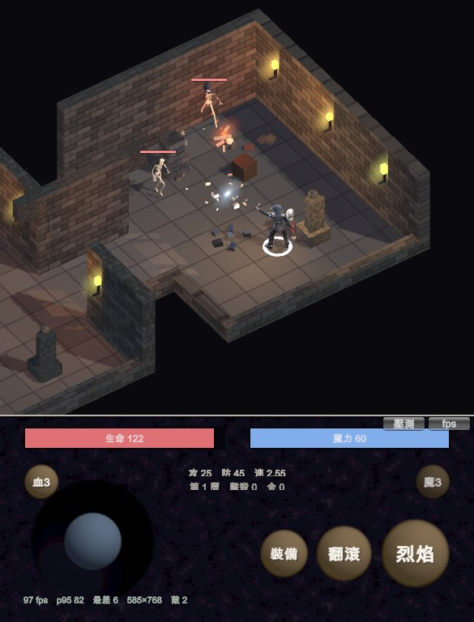
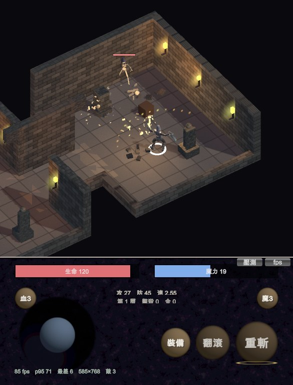

地城迴響 · 敵人組成與技能
新敵人種類留到第 18 層以後才登場。骷髏法師是遠程單位， 會拉開距離施放火球。玩家的技能各自有對應的動作。
| 深度 | 組成 |
|---|---|
| 1～17（設計層） | 骷髏兵（持劍）— 只有這一種 |
| 18～21 | 骷髏兵 ×3、骷髏戰士 ×1 |
| 22～27 | 骷髏兵 ×2、骷髏戰士、骷髏法師 |
| 28 以上 | 骷髏兵、骷髏戰士 ×2、骷髏法師 ×2 |
理由是節奏：17 層是第一輪要走完的內容，全程只有一種敵人， 「更深＝更難」才會讀成數值成長，而不是「又冒出一種沒看過的東西」。 騎士第 18 層登場、法師第 22 層登場，都是量出來的，不是估的。


動畫庫只有一支揮劍動作。UAL 這套 43 支 clip 裡，劍系只有
Sword_Attack——沒有重擊、沒有第二段連擊。第一版的重斬直接
重播同一支，玩家花 24 點魔力，看到的是普通的一刀。
解法不是買動畫，是疊一層程序化動作：蓄力段 0.35 倍速播放並微微後退， 出手段拉到 1.9 倍速並前衝 1.2 m，加上弧形火花。同一支 clip，讀起來是兩個動作。
| 技能 | 動作組成 |
|---|---|
| 普攻（劍） | Sword_Attack 原速，正面 ±50° 半圓 |
| 重斬（劍） | 蓄力 0.35× + 後退 → 出手 1.9× + 前衝 1.2 m + 弧形火花 |
| 普攻（法杖） | Spell_Simple_Shoot + 單發火球，射程 8.5 m |
| 烈焰（法杖） | 三發扇形火球（±22°）+ 範圍傷害 |
| 翻滾 | Roll + 0.6 秒無敵 |
| 項目 | 結果 |
|---|---|
| 第 1～17 層只有持劍骷髏 | True |
| 騎士登場層 / 法師登場層 | 第 18 層 / 第 22 層 |
| 法師施法 → 火球離手 → 命中 | 3 → 3 → 3 |
| 玩家生命（被法師打） | 128 → 122 |
| 普攻位移 / 重斬位移 | 0.00 m / 1.16 m |
| 普攻速度 / 重斬速度 | 1.00× / 0.35～1.90× |
| 重斬結束後播放速度已還原 | True |
| 法杖在 6.5 m（近戰範圍外）能攻擊 | True |
一、火球每一顆都在出手當幀自爆。
撞牆判定我拿「把點夾回可走區」的函式來用，但那個函式除了牆之外 還會把點推出地上道具的圓形範圍。火球飛在胸口高度，卻被地上的 木桶擋掉——發射 7 顆、撞牆 7 顆、命中 0 顆。改成只看牆的判定。
二、戰鬥中永遠放不出技能。
技能拿普攻的攻擊鎖當門檻，而普攻每 0.45 秒就把它拉起來一次—— 玩家只要在打怪，按重斬與翻滾都完全沒反應，而且沒有任何提示。 被圍毆時最需要翻滾的那一刻，正好就是普攻一直在觸發的時候。 現在技能只擋「另一個技能還在跑」。
三、火球拍出來是白的。
材質開了自發光，但沒有自發光貼圖時它會在整片四邊形上加一個均勻值， 把徑向衰減整個蓋掉——火球變成邊界模糊的白色方塊，連顏色都吃不出來。 改成不用自發光，靠兩層加法混合疊出亮度：外圈淡、核心濃。